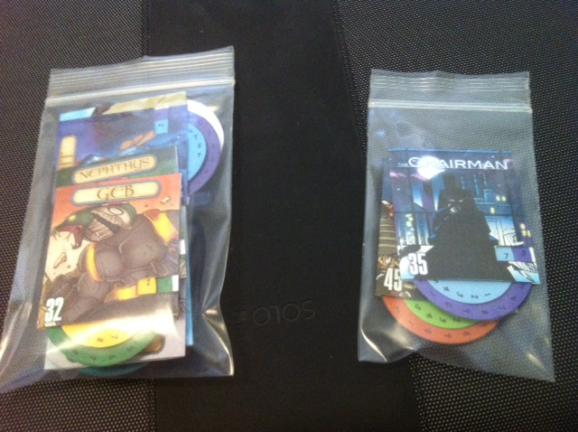
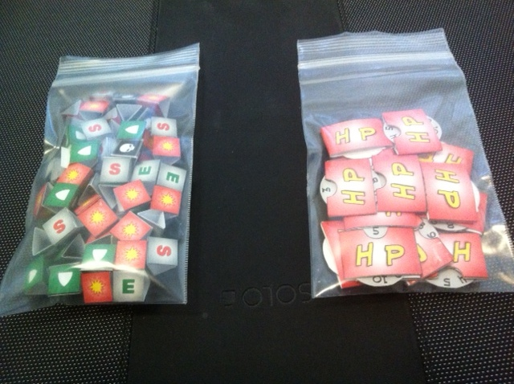
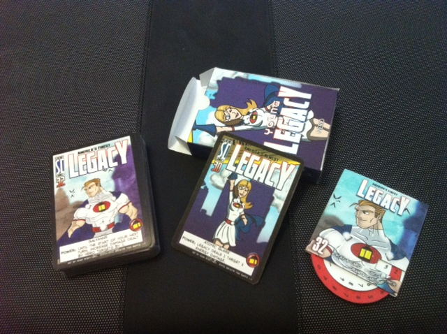

So, this is how I store my game. If you haven't guessed by the title, I use a ton of Spiff's awesome accessories, that are made available to the public on http://www.spiffworld.com/sotm.
All of the boxes are from Spiffs website and are super sturdy. Theres one for each hero, villain, and environment. Each hero and villain deck also has a hp spinner tracker that fits snuggly in the box along with the deck (also courtesy of Spiff's website). For the two villain decks with multiple bosses (the chairman and the ennead), I have a seperate bag for the hp trackers, since only one fits comfortably in a box. I use the oversized villain cards from the GtG store.
For tracking things I use a baggy full of a ton of 3d effect trackers and another with a bunch of mini hp spinners for minions, both of which are once again from Spiffs website. I've never come across a situation where I run out of health/status trackers, but if such a situation arises the extra compartments in the briefcase hold both the health tokens and trackers that come with the enhanced edition.
Speaking of the briefcase; everything (including the rulebook for each expansion) fits very nicely in a solo briefcase, which my friend got from staples. The spongeballs (4 green ones on the side, 4 red ones and 4 back ones below the bottom row) are really convenient for ensuring that everything fits snuggly and nothing slides around at all.
Also something to keep in mind- I totally suck at crafty stuff, but with a little patience it was a breeze to put together the accessories on Spiff's website. The supplies needed were cheap, and the instructions are very clear. A little patience goes a long way :).
Thanks to Spiff for creating such awesome accessories for the public, and to the GtG team for creating such a great game.



